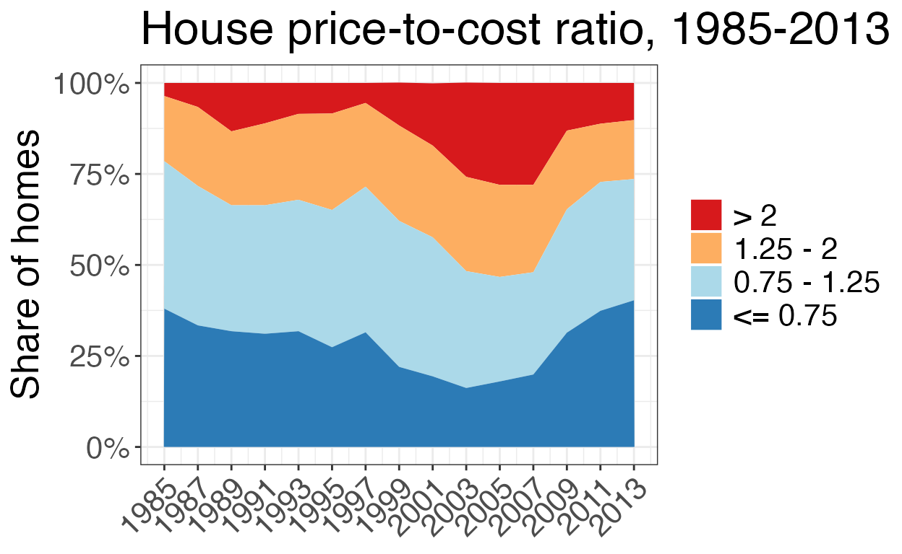
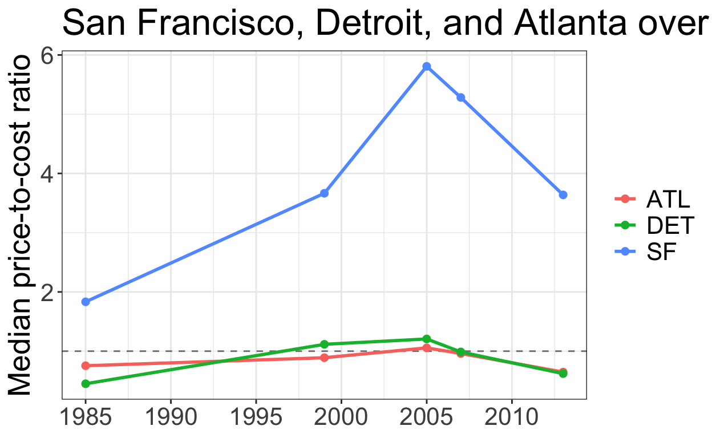
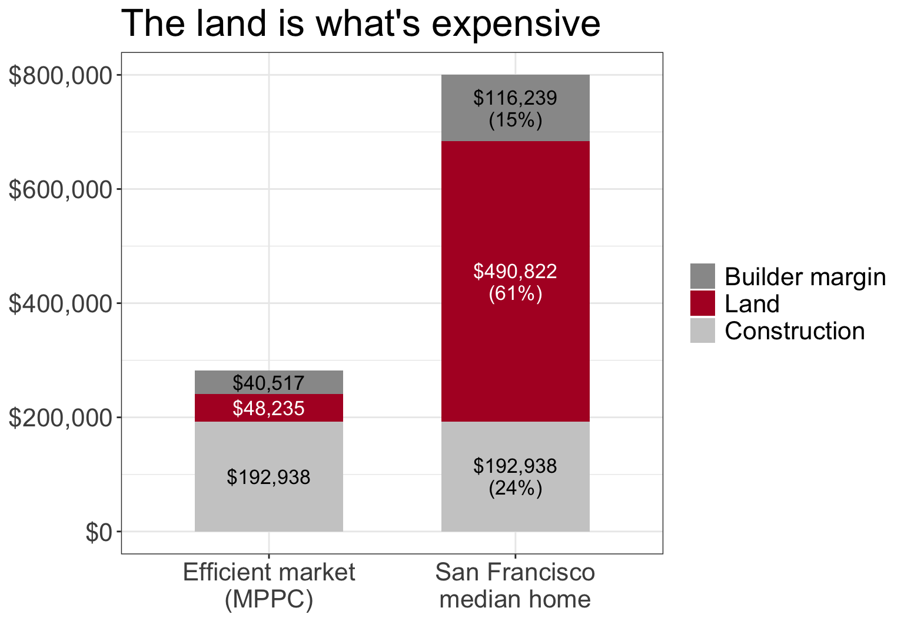
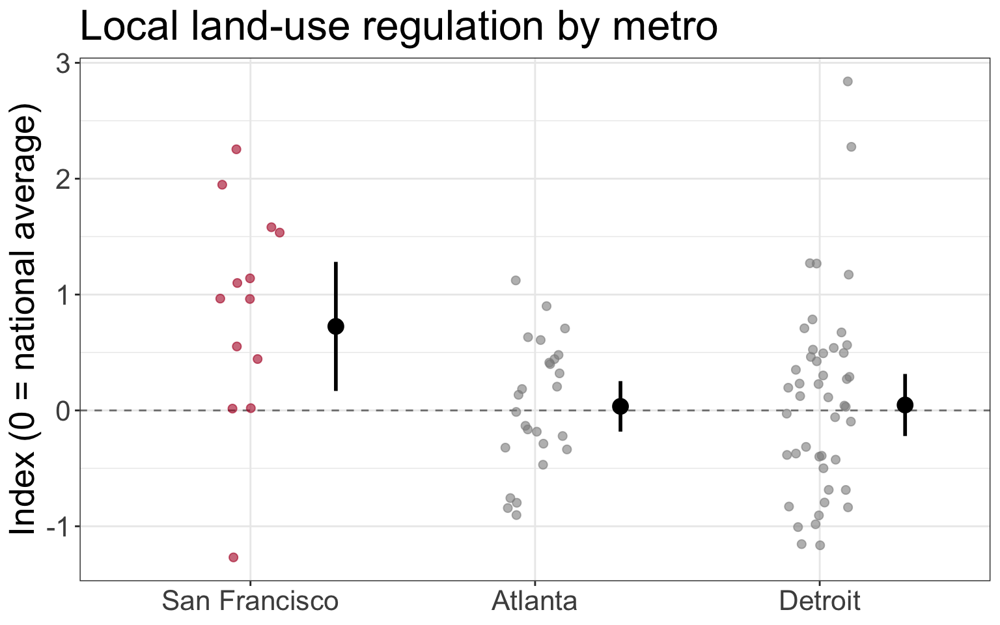
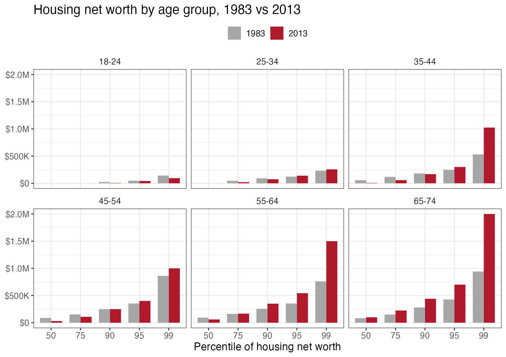
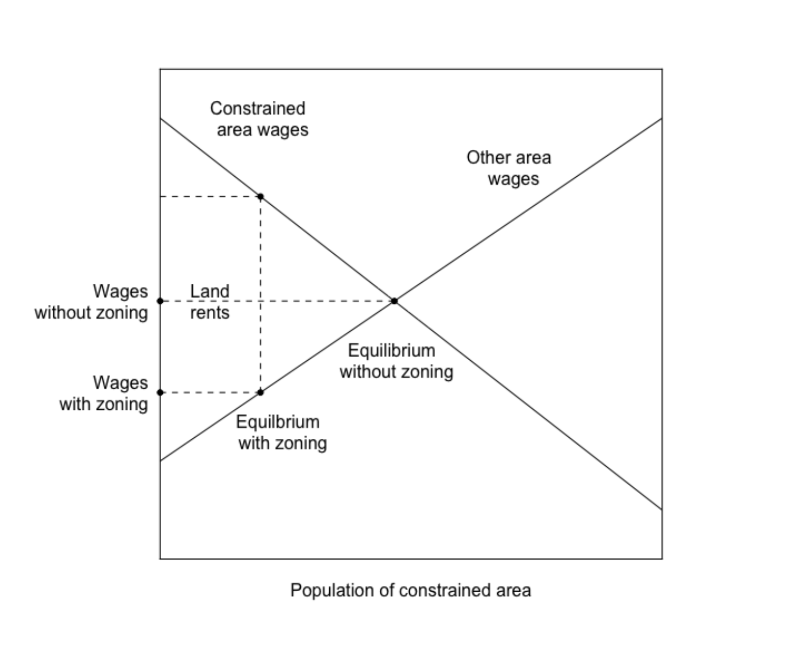
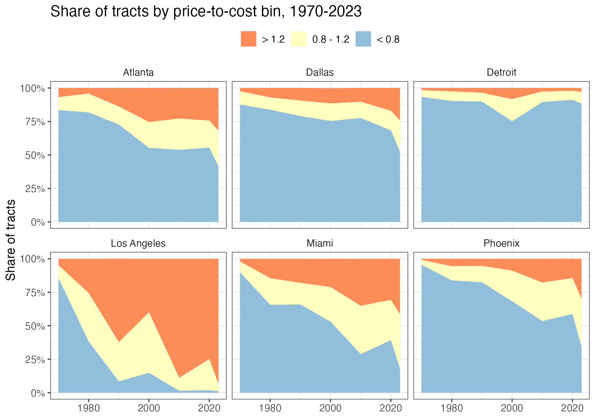

A Review of “The Economic Implications of Housing Supply”
In the first post of this series examining housing markets, we explored the theory underlying housing markets including how houses filter from higher cost markets to lower, as well as the impact on the market price when the construction of new housing is restricted. In this post, we’re moving from theory to practice by studying (Glaeser and Gyourko 2018) and the related material in (Glaeser and Gyourko 2025). (Glaeser and Gyourko 2018) examines the following 3 high level ideas in detail in the US housing market:
We’ll work through each of these piece by piece and deconstruct the author’s arguments, digging into the author’s data and methods for each question.
To answer the first question, the authors compare construction cost to the market price at which a house sells. This speaks to a fundamental economic principle defining the properties of efficient markets - in a perfectly efficient market the market price is equal to the cost of production. The authors can take for granted that their econ savvy reader have the background to understand the logic underlying this argument but if you’d like a reference to refresh yourself I’d encourage checking out this wikipedia article and/or this khan academy piece.
In order to come up with a production cost, the authors put together the following model consisting of 3 quantities:
These three components combine to define the minimum profitable production cost (\(MPPC\)) in the following manner:
\[ MPPC = (L + CC)EP, \]
Where EP is defined as some scalar inflation factor, \(EP > 1\), so that if \(EP=1\), there’s no profit and any value above represents the additional portion of the cost that returns to the firm.
To fill in this equation the authors take the following strategy:
Putting this together, the authors determine that an “efficient” housing market should be able to supply an 2000 sq. ft. “economy” house for ~ $200K in a low construction cost market and ~ $265K in the higher construction cost markets.
Plugging in the construction costs from above, with \(L = 0.25 \times CC\) (the same as \(L = 0.2 \times (L + CC)\)):
The authors compare prices to costs by computing, for every single-family home, the ratio of the housing price (\(HP\)) to its minimum profitable production cost, \(\frac{HP}{MPPC}\). As stated in the paper, this ratio is effectively Tobin’s q for housing: - a value below 1 or above 1 signals some barrier to the market operating efficiently for any number of reasons. - However, if this number is ~ 1, then we have evidence to support the hypothesis that the market is operating efficiently.
The authors sort homes into four bins: a ratio of 0.75 or less (priced well below cost), 0.75–1.25 (roughly at cost), 1.25–2, and greater than 2 (more than double production cost).
The authors’ observed market price data come from the 1985–2013 micro records of the American Housing Survey (AHS), which report each unit’s self-assessed value, its living area in square feet, whether it is single-family detached, and its metropolitan area. The square footage matters because the authors use the R.S. Means construction cost for a 2,000 sq. ft. home – a proprietary dataset we don’t have access to ourselves – and match it to houses of approximately that size in the numbers below.
You can see Table 1 of (Glaeser and Gyourko 2018) reproduced below.
Table 1. House price-to-minimum profitable production cost ratio (micro data). Source: Glaeser and Gyourko (2018).
| year | <= 0.75 | 0.75 - 1.25 | 1.25 - 2 | > 2 |
|---|---|---|---|---|
| 1985 | 38.0% | 40.5% | 17.9% | 3.6% |
| 1987 | 33.4% | 38.3% | 21.7% | 6.6% |
| 1989 | 31.8% | 34.6% | 20.3% | 13.3% |
| 1991 | 31.1% | 35.3% | 22.5% | 11.1% |
| 1993 | 31.8% | 36.1% | 23.6% | 8.5% |
| 1995 | 27.4% | 37.7% | 26.5% | 8.4% |
| 1997 | 31.5% | 40.0% | 23.0% | 5.5% |
| 1999 | 22.0% | 40.1% | 26.2% | 11.8% |
| 2001 | 19.4% | 38.2% | 25.2% | 17.1% |
| 2003 | 16.2% | 32.1% | 25.9% | 25.9% |
| 2005 | 18.0% | 28.7% | 25.3% | 28.0% |
| 2007 | 19.9% | 28.1% | 24.0% | 28.0% |
| 2009 | 31.4% | 33.9% | 21.6% | 13.1% |
| 2011 | 37.4% | 35.4% | 16.0% | 11.2% |
| 2013 | 40.3% | 33.3% | 16.2% | 10.2% |

Distribution of the price-to-cost ratio over time. Source: Glaeser and Gyourko (2018), Table 1.
The area plot makes the cycle the authors describe easy to see at a glance. The top band – homes valued at more than double their production cost – is thin in the mid-1980s, thickens steadily through the 1990s, and by 2003–2007 has swollen to more than a quarter of all owner-occupied single-family homes in the sample, right alongside the top of the housing boom. It then collapses just as sharply after the financial crisis, falling back below 15 percent by 2011–2013. The bottom band tells the mirror-image story: the share of homes priced at or below three-quarters of production cost bottoms out during the same 2001–2007 window before rebounding to its highest level in the series by 2013. In other words, the market swings from a large majority of homes priced near or below cost in the 1980s and early 1990s, to a market where a rising share of homes command prices well above what it would cost to build them from scratch, and back again – consistent with the authors’ argument that these swings reflect changes in the binding-ness of supply constraints rather than a one-way drift toward higher-priced housing.
All of this serves to illustrate the author’s larger point: the housing market -nationally - is not operating efficiently as we see the cost of buying a home grow much larger than the cost of production, in the run-up to the financial crisis. However, just because that large picture comes into view, doesn’t mean there aren’t specific markets where we might see different trends emerge.
The authors pick out three markets in particular as highlighting the different housing dynamics on display in the US: (1) San Francisco, (2) Detroit and (3) Atlanta. Each illustrates a different way policy, supply and demand have interacted to produce different housing prices over time.
While I didn’t have the R.S. data available to compute these values exactly I used the grid heuristic values to match the data and recomputed the ratios for these three markets using the AHS data below.

Figure 1: Price-to-cost ratio, three illustrative metros.
San Francisco sits well above the cost line in every year we observe, and climbs further still through the 2000s – a market where, per the authors’ argument, both geographic limitations and self-imposed regulatory constraints keep prices detached from production cost regardless of the broader economic environment. Detroit and Atlanta, by contrast, track close to (or below) a ratio of 1 throughout, consistent with the authors’ description of these as more supply-elastic markets where prices cannot stray far from cost. In Detroit’s case, there is abundant supply without new construction (housing demand continued to fall as foreign competition hurt the auto industry and people left Detroit), whereas in Atlanta, active new construction pulls prices back down to meet demand.
In the more expensive markets like San Francisco and the rest of the coastal areas, the authors identify other factors that may explain the gap between construction cost and housing market price.
If we go back to the MPPC formula, there are three suspects for what could be causing the housing price to be so expensive: the cost of construction \((CC)\), the construction firm’s profit (\(EP\)), and/or the cost of land \((L)\). San Francisco has relatively high construction costs, but that is not what makes its homes so expensive. To see what does, let’s take the median home in the authors’ 2013 data and work backwards from its price to figure out what each piece of it must have cost.
Step 1: Start with what we observe. The self-reported value of the home at San Francisco’s median price-to-cost ratio is $800,000, and its ratio is \(\frac{HP}{MPPC} = 2.84\).
Step 2: Back out the minimum profitable production cost. Since the ratio is just the price divided by MPPC, we can rearrange to solve for MPPC:
\[ MPPC = \frac{HP}{2.84} = \frac{800,000}{2.84} \approx \$281,690 \]
This is what it would cost to build this home and earn the builder a normal profit in an efficient market.
Step 3: Strip out land and profit to get the construction cost. Recall from earlier that \(MPPC = (L + CC) \times EP\), with \(L \leq 0.2 (L + CC)\), which simplifies to \(L = 0.25 \times CC\), and \(EP = 1.17\). Substituting the land rule of thumb:
\[ MPPC = (0.25\,CC + CC) \times 1.17 = 1.25 \times 1.17 \times CC \approx 1.46 \times CC \]
so the physical construction cost (\(CC\)) is
\[ CC = \frac{MPPC}{1.46} = \frac{281,690}{1.46} \approx \$192,938 \]
Step 4: What did the land actually cost? Now go back to the $800,000 price. Developers cannot earn super-normal profits at the margin, so the builder still only takes the same 17% margin. Removing it from the price and then subtracting the construction cost leaves whatever must have been paid for the land:
\[ L_{actual} = \frac{HP}{1.17} - CC = \frac{800,000}{1.17} - 192,938 \approx \$490,822 \]
Step 5: What would the land cost in an unregulated market? Using the same rule of thumb that land is a quarter of construction costs:
\[ L = 0.25 \times CC = 0.25 \times 192,938 \approx \$48,235 \]
That is what the underlying land would cost in a relatively unregulated residential development market. As a check, land plus construction is $48,235 + $192,938 = $241,173, and the builder’s 17% margin on top of that gets us to roughly $282,172, which matches the $281,690 from Step 2 up to rounding.
Compare that with Step 4: the land actually cost roughly 10 times the $48,235 an unregulated market would imply ($490,822 / $48,235 \(\approx\) 10.2).

Figure 2: Where the money goes: an efficient-market cost stack versus San Francisco’s median home. Calculations follow Glaeser and Gyourko (2018).
Construction costs are identical in both bars. Almost the entire gap between what this home should cost and what it sells for is the bidding up of land values. Because the scarce factor is land, not building materials or construction labor, that is what makes San Francisco housing so expensive. And since most of the inflation in the price comes from the value of the land itself rather than the building on it, it helps motivate policies such as a land value tax, which taxes the value of land rather than the structures built on it. Other restrictions on development, also cause this piece to inflate, and the authors’ use a survey of local government regulation (Gyourko et al. 2008) to identify association - not causation - between these two measures.
To see how much local regulation varies across these three markets, the chart below plots the Wharton Residential Land Use Regulatory Index for each community surveyed in each metro. The index is standardized so that 0 is the national average and higher values mean more restrictive regulation.1

Figure 3: Local land-use regulation in three metros (2005 Wharton survey). Small points are surveyed communities; the large point and bars are the survey-weighted metro mean and 95% confidence interval. Source: Gyourko et al. (2008).
San Francisco’s communities are, on average, much more restrictive than the national norm: the survey-weighted mean index is 0.72 (95% CI 0.17 to 1.28), compared with 0.03 in Atlanta and 0.05 in Detroit, both close to the national average. Detroit’s communities vary the most (variance of 0.71, versus 0.28 in Atlanta), so some Detroit-area suburbs are quite restrictive even though the metro as a whole is not. These confidence intervals treat each surveyed community as an independent draw, when they’re likely correlated, so they are best read as a rough guide.
As the authors have now established the different types of housing markets throughout the US, as well as some possible sources of the rising cost, they now turn to the larger implications of what these high costs can do to the economic well-being of those living in places with higher housing costs.
It’s quite intuitive that high housing prices are bad. The authors explore just how these inflated prices might have negative impacts in the less efficient markets identified in their work. They present two general themes of just what happens when the cost of housing becomes so high.
The authors work through what might be an un-intuitive line of thinking when reasoning around the wealth created from rising land prices. Since the rise in land values may also increase the cost of living, an individual who experiences an increase in their home’s value may not be all that better off, since they have to compensate for their home’s increased value with increased property taxes, and inflation on other goods and services they buy in their area, to support others’ ability to live in the less efficient market.
However, the authors’ argue that the larger impact falls on those who are renting in an inefficient market like New York or San Francisco, since they experience no increase in the value of their home to compensate their increased cost of living. Their rent simply rises along with all of their other costs. The authors argue that because older households tend to own homes and younger ones rent, rising housing costs lead to an intergenerational transfer of wealth from young to old through the increased value of the land.
Table 3 of (Glaeser and Gyourko 2018) tries to make this more concrete using the Federal Reserve’s Survey of Consumer Finances. It compares housing net worth at several points in the distribution for the same age groups in 1983 and in 2013, three decades apart.
Table 3. Housing net worth, 30 year changes ($2013), by age group and percentile. Source: Glaeser and Gyourko (2018), using the 1983 and 2013 Survey of Consumer Finances.
| Percentile | 18-24 (1983) | 45-54 (1983) | 18-24 (2013) | 45-54 (2013) |
|---|---|---|---|---|
| 50 | $0 | $87,120 | $0 | $30,000 |
| 75 | $0 | $152,159 | $0 | $109,000 |
| 90 | $24,803 | $248,818 | $5,500 | $250,000 |
| 95 | $47,488 | $353,190 | $43,000 | $400,000 |
| 99 | $141,808 | $862,359 | $95,000 | $1,000,000 |
| Percentile | 25-34 (1983) | 55-64 (1983) | 25-34 (2013) | 55-64 (2013) |
|---|---|---|---|---|
| 50 | $0 | $94,184 | $0 | $60,000 |
| 75 | $45,352 | $161,886 | $21,000 | $167,000 |
| 90 | $91,827 | $255,361 | $74,000 | $350,000 |
| 95 | $123,135 | $353,190 | $140,000 | $543,000 |
| 99 | $230,751 | $760,380 | $256,000 | $1,500,000 |
| Percentile | 35-44 (1983) | 65-74 (1983) | 35-44 (2013) | 65-74 (2013) |
|---|---|---|---|---|
| 50 | $55,799 | $82,411 | $6,000 | $100,000 |
| 75 | $118,660 | $150,136 | $58,200 | $225,000 |
| 90 | $180,763 | $279,972 | $168,000 | $440,000 |
| 95 | $247,349 | $426,936 | $300,000 | $701,000 |
| 99 | $531,198 | $941,840 | $1,025,000 | $2,000,000 |

Housing net worth by age group and percentile, 1983 vs 2013 ($2013). Source: Glaeser and Gyourko (2018), Table 3.
The pattern is lopsided. Younger households – 18-24, 25-34 and 35-44 – hold the same or less housing wealth in 2013 than their counterparts did in 1983 through much of the distribution. The median 35-44 year old, for example, went from about $56,000 to $6,000. Only the very top of the 25-34 and 35-44 groups – the 95th and 99th percentiles – is somewhat higher. The oldest groups tell a different story: at the 90th percentile and above, housing wealth for 55-64 and 65-74 year olds is up considerably, and a 65-74 year old at the 99th percentile now holds about $2 million, more than double 1983. Many of them became homeowners 30-40 years earlier and were best positioned to benefit from rising prices. In other words, the sharpest gains in housing wealth go to a small number of the richest, oldest owners. Note that this is a survey of the same aged individuals at different points in time and there is no evidence of a causal relationship of supply restrictions, construction costs, or any of the other factors leading to the outcomes in this data set - it is merely descriptive of the wealth of these two different groups at different points in time.
A second consequence of the inefficient housing markets is that individuals that might otherwise move to these highly productive and dynamic labor markets, the authors argue, can’t move and participate in these economies. The authors work through a modeling exercise to try and illustrate the elasticity of labor demand and supply in these markets with and without the supply restrictions increasing land values.

Figure 4: Welfare consequences of restricting development in a productive market. Source: Glaeser and Gyourko (2018).
I’ll spare you this exercise, but the larger, intuitive point they argue is worth reflection. When the cost of living somewhere like San Francisco, New York, etc. becomes very high, it deters individuals who might otherwise benefit professionally from the experience of moving to those cities and obtaining the training, network contacts, etc. that they could (historically at least) only receive in those cities. They’re more likely to stay in their less productive towns where they might receive a lower salary. Note here, that the lower salary is not just because they’re in a lower cost of living location, it is also because they are not as productive as they might be counter-factually living in some place with better connections and professional opportunities.
There should be little surprise that the authors identify and argue for more efficient housing markets given the negative impacts they identify in this work. While sympathetic to the fact that new construction and increasing density can carry negative impacts - more traffic, noise etc. - the authors argue that the positives outweigh the negatives in terms of the impact on intergenerational wealth, labor market flexibility, and more.
In their more recent paper, (Glaeser and Gyourko 2025), the authors extend their price cost comparison to the 2020’s. They find the same pattern in their 2018 paper now shows up again in present day - the sales price of a house in Atlanta, for example is starting to become more expensive than what it costs to produce the house.
Table 3. Share of census tracts in each P:MPPC bin, six focal markets. Source: Glaeser and Gyourko (2025).
| CBSA | P:MPPC bin | 1970 | 1980 | 1990 | 2000 | 2010 | 2020 | 2023 |
|---|---|---|---|---|---|---|---|---|
| Atlanta | < 0.8 | 83.5% | 81.8% | 72.7% | 55.3% | 53.9% | 55.5% | 41.6% |
| Atlanta | 0.8 - 1.2 | 9.7% | 14.0% | 13.5% | 19.3% | 23.3% | 20.2% | 26.7% |
| Atlanta | > 1.2 | 6.8% | 4.2% | 13.9% | 25.4% | 22.9% | 24.4% | 31.7% |
| Dallas | < 0.8 | 87.6% | 83.8% | 79.1% | 75.4% | 77.6% | 68.4% | 52.7% |
| Dallas | 0.8 - 1.2 | 9.9% | 9.2% | 11.5% | 13.1% | 12.1% | 14.6% | 23.0% |
| Dallas | > 1.2 | 2.5% | 7.0% | 9.4% | 11.4% | 10.3% | 17.0% | 24.3% |
| Detroit | < 0.8 | 93.4% | 90.3% | 89.9% | 75.2% | 89.5% | 91.2% | 88.4% |
| Detroit | 0.8 - 1.2 | 4.9% | 7.2% | 6.5% | 16.5% | 7.9% | 6.7% | 8.7% |
| Detroit | > 1.2 | 1.8% | 2.6% | 3.6% | 8.4% | 2.6% | 2.1% | 2.8% |
| Los Angeles | < 0.8 | 85.6% | 38.3% | 8.5% | 14.9% | 1.5% | 1.9% | 1.1% |
| Los Angeles | 0.8 - 1.2 | 9.6% | 36.1% | 29.2% | 45.1% | 9.6% | 23.2% | 5.7% |
| Los Angeles | > 1.2 | 4.8% | 25.6% | 62.4% | 40.0% | 88.9% | 74.9% | 93.2% |
| Miami | < 0.8 | 89.9% | 65.7% | 65.9% | 53.1% | 28.8% | 39.3% | 18.3% |
| Miami | 0.8 - 1.2 | 8.1% | 19.8% | 16.1% | 25.8% | 36.1% | 30.0% | 40.3% |
| Miami | > 1.2 | 2.0% | 14.5% | 18.0% | 21.0% | 35.1% | 30.7% | 41.3% |
| Phoenix | < 0.8 | 95.5% | 83.9% | 82.5% | 68.3% | 53.5% | 58.8% | 34.6% |
| Phoenix | 0.8 - 1.2 | 3.6% | 10.6% | 12.2% | 22.9% | 28.7% | 26.8% | 35.5% |
| Phoenix | > 1.2 | 0.9% | 5.5% | 5.2% | 8.8% | 17.8% | 14.5% | 29.8% |

Share of census tracts by price-to-cost bin. Source: Glaeser and Gyourko (2025), Table 3.
The contrast across markets is stark. In Los Angeles, the share of tracts priced above 1.2 times production cost climbs from under 5 percent in 1970 to about 93 percent in 2023. The sunbelt metros that once built freely have been heading the same way: the share of high-priced tracts in Atlanta, Dallas, Miami and Phoenix has risen from under 7 percent of tracts in 1970 to between roughly a quarter and two-fifths. Detroit, where prices remain well below the cost of building, barely moves.
The insight to draw here is that we’re facing a persistent problem. The inefficiency spotted in (Glaeser and Gyourko 2018) is now spreading. At the end of (Glaeser and Gyourko 2025) the authors argue that these problems share a common problem: after homes and neighborhoods are built those who own the homes push back on any attempts to increase the density of the neighborhood, limiting the potential for new housing supply to offset any increased demand. A political and economic problem, we’ll turn to potential remedies for this problem in the next post(s).
The index summarizes a 2005 survey of local planning directors on who approves development, what rules apply, and how lot costs and review times have changed. Eleven sub-indexes are combined into one score per community. It measures how hard it is to build, not what happens to prices.↩︎
If you see mistakes or want to suggest changes, please create an issue on the source repository.
Text and figures are licensed under Creative Commons Attribution CC BY 4.0. Source code is available at https://github.com/apeterson91/XStreetValidated, unless otherwise noted. The figures that have been reused from other sources don't fall under this license and can be recognized by a note in their caption: "Figure from ...".
For attribution, please cite this work as
Peterson (2026, Nov. 12). X Street Validated: Housing Economics - Part II. Retrieved from https://xstreetvalidated.com
BibTeX citation
@misc{peterson2026housing,
author = {Peterson, Adam},
title = {X Street Validated: Housing Economics - Part II},
url = {https://xstreetvalidated.com},
year = {2026}
}